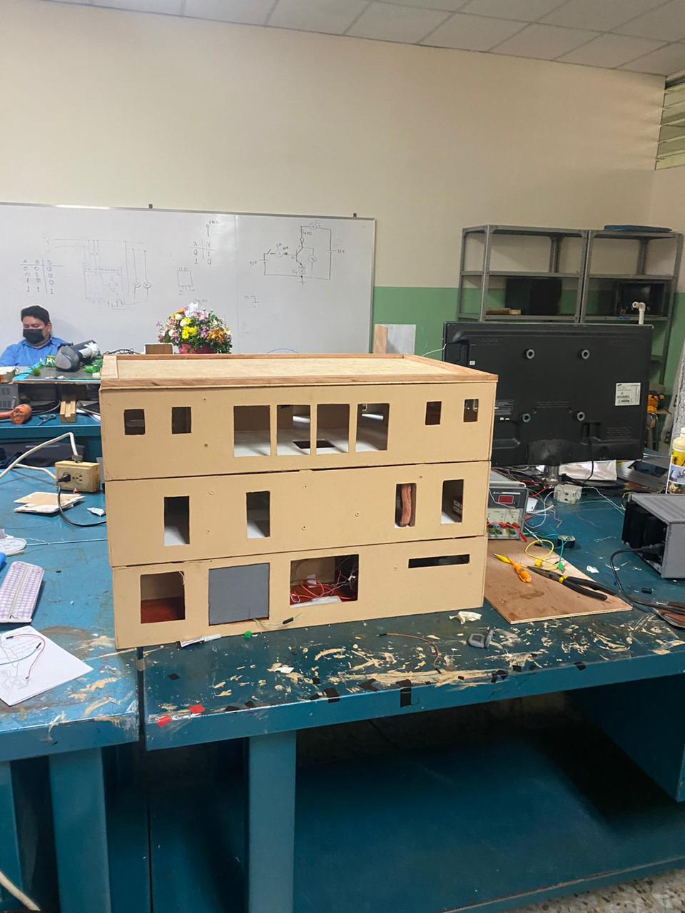
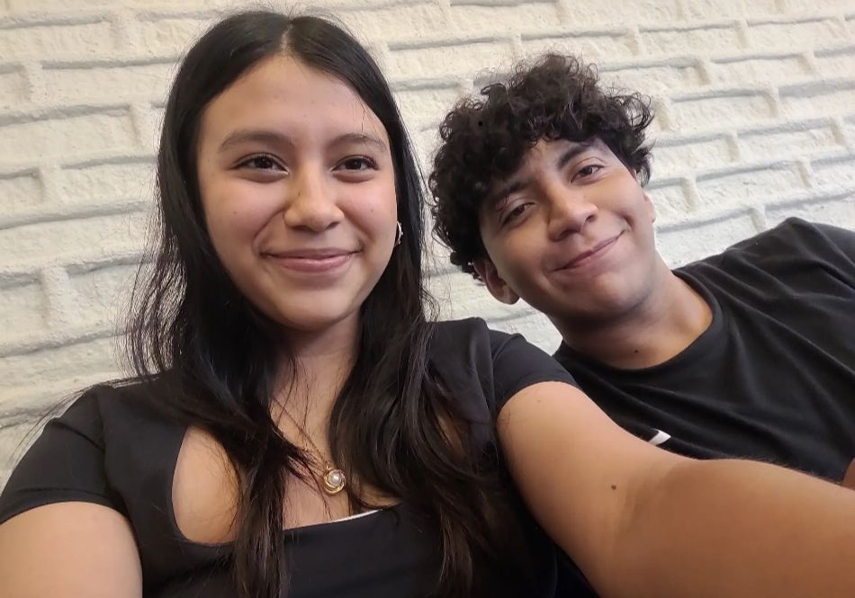
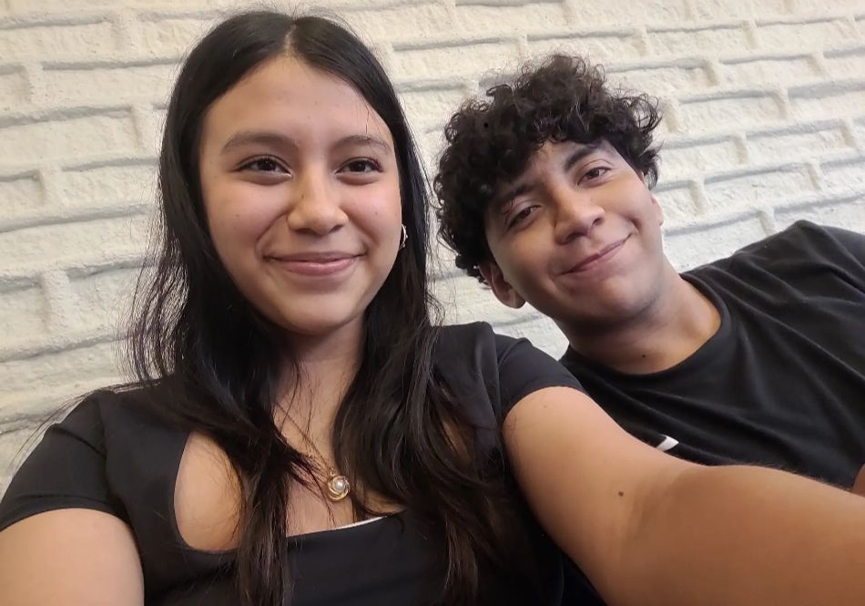

Datos Generales
- Nombre: Leví Guerra
- Fecha de Nacimiento: 09 de octubre de 2004
- Edad: 19
- Estatura: 1.82 m
- Hobbies: escuchar música, ver anime, ver películas, jugar en la PC
- Artista favorito: KanYe West
- Anime favorito: Fullmetal Alchemist Brotherhood
- Película favorita: El club de la Pelea
- Videojuego favorito: Cuphead
Primeros años de vida
Los primeros años de vida (0-5 años) es una etapa de la cual recuerdo muy pocas cosas. Diré un hecho por cada año de esta etapa: 1 año: me mudé a la casa en la cual viví hasta el 2020; 2 años: casi soy atropellado por un microbus, mi papá me salvó; 3 años: empecé a estudiar en un colegio que estaba cerca de mi casa; 4 años: viví mi primera crisis económica mundial; 5 años: mi papá dejo de trabajar en Sonsonate y empecé a verlo todos los días en lugar de solamente los fines de semana.
Cambio de colegio, cambio de vida
Para el año 2013, iba a ir a cuarto grado, mis padres decidieron cambiarme de colegio debido a que la directora del anterior les dijo que tenía potencial para dar en un colegio que ofreciera educación de mejor calidad. Me cambié al Colegio Español Padre Arrupe, el primer año fue sin dudas el más díficil debido a que a pesar de que siempre he sido muy sociable me costaba hacer amigos, siempre he creído que era porque los niños ya tenían grupos formados y simplemente no encajaba en ninguno; no le di importancia y en 2015 las secciones ya establecidas se mezclaron, esto facilitó hacer amigos nuevos.
Tercer ciclo
El colegio siempre se me dio bastante bien, pasaba sin estudiar y sin hacer tareas. Al pasar a séptimo grado pensé que eso sería igual, mi sorpresa fue que eso ya no era posible debido a como los maestros estructuraban la nota del período; el primer período dejé dos materias: Matemática y Lenguaje; Matemática por no hacer ninguna guía y Lenguaje por no hacer dos ensayos de obras que sí leía pero pensaba que solo con el control pasaría las materias.
Este cambio fue muy dificil debido a que estaba acostumbrado a pasar sin hacer nada a hacer tareas todos los días, me adapte y no volví a dejar materias en el colegio.
Bachillerato y COVID-19
En 2020 inicié el Bachillerato Técnico en Electrónica, yo quería estudiar general pero mis papás me obligaron a hacer un técnico. En marzo nos tuvimos que encerrar en nuestras casas y me la pasaba jugando todo el día o en llamada con mis amigos. Las tareas eran muy sencillas, en primer año y segundo lo pasé muy relajado debido a que no iba a estudiar en tercer año (2022) tuve que regresar de manera obligatoria.
Tercer año
Es importante hacer un apartado solo para el último año de colegio debido a que sucedieron demasiadas cosas, primero con mis amigos la pasabamos escuchando música en el salón, jugando y durmiendo; solo había que concentrarse en la tesis, para la cual realizamos un edificio que funcionaba con domotica, el proyecto se entragaba al final del año. A finales de julio me luxaron la rodilla jugando fútbol y con ello dos ligamentos que dejan retirados a futbolistas, estos son: Ligamento Cruzado Anterior, Ligamento Cruzado Posterior.
Universidad
Resumiendo mucho esta etapa de mi vida: el primer año me lo tomé de manera muy relajada, en segundo año cambié de carrera en la fecha límite para hacerlo, al fin acepté que lo que quería estudiar era algo relacionado a la programación y no lo hacía porque no quería que dijeran que lo estudiaba por mi papá. Conseguí buenos amigos, también novia. La vida no es perfecta, pero cada día que me levanto agradezco a Dios, al universo, por poder volver a ver a las personas que amo y poder reír con ellas :p.
 
